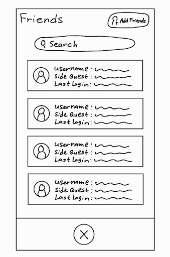
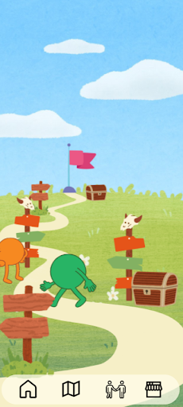

Maintaining Hobbies with SideQuest
The Problem
College students have a hard time keeping up with their hobbies in a meaningful way. Attention spans aren't what they used to be, so how do we change that? With just two weeks to work, my team and I had a few points we wanted to research.
- Students don't have time to interact with their hobbies.
- How do students maintain their hobbies consistently?
- How can motivation to keep up with hobbies be cultivated?
Once we had the problems nailed through structured interviews and qualitative coding, we landed on an idea.
Why not gamify the process of interacting with your hobbies?
Our Objectives
We set out to understand how to implement gamification in an effective way, settling on:
- Reinforcing the behavior of engaging in hobbies.
- Implementing incentives for completing hobby based activities will keep our users accountable.
- Allow for group activities by letting users tackle "quests" together.
We thought of streaks, reminders and habit scoring, but those felt too similar to already pre-existing applications and competition.

My Role & Contributions
I conducted a quarter of our semi-structured interviews to gain deeper insights on their hobbies. My findings with my team were:
- Pursuing hobbies can be expensive.
- Technology and social media lead to distraction and low motivation.
- Students find it easier to maintain hobbies
We floated the idea of an avatar similar to the one in the "Fynch" app. We would develop a similar system where completing "quests" would give you coins you could use to buy items for your avatar.
With our idea solidified, we began prototyping!
What We Built
Our low-fi prototype delivered:
- A visual representation of the avatar, with a home, map, friends, and shop screen.
- A main quest that had multiple smaller side quests to complete along the way.
- A tracker of current hobbies, visualized as "quests"
When presenting after the sprint period was over, students reacted well to the prototype.
What I Learned
- Ensure a polished protocol. Keeping a strict protocol without leading questions or easy "yes or nos" proved critical due to our time constraints.
- Prioritize. Due to the crunch period, we had to pick and choose how to best approach the project and determine what steps were truly necessary.
- The systems that reduce our attention spans can help us enrich our lives.